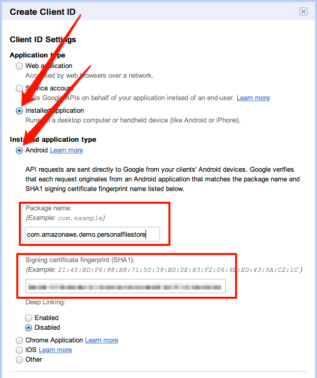

Project Number. You'll use it in later steps. The other steps in this guide will be useful with your future Google+ Apps, but are not necessary for this sample.
com.amazonaws.demo.personalfilestore.
This Amazon S3 Personal File Store sample is fully detailed in the web identity federation article. The sample demonstrates how to use AWS Security Token Service (STS) to give application users specific and constrained permissions to an Amazon S3 bucket. Each application user will get a "folder" of an Amazon S3 bucket as specified by the role policy. This README details all the steps necessary to get the sample running with Google+ Authentication. It assumes you've alredy completed the steps in the base README for setting up the application with Facebook:
Project Number. You'll use it in later steps. The other steps in this guide will be useful with your future Google+ Apps, but are not necessary for this sample.
com.amazonaws.demo.personalfilestore.


__BUCKET_NAME__ with the S3 bucket you created earlier:
{
"Version":"2012-10-17",
"Statement":[{
"Effect":"Allow",
"Action":["s3:ListBucket"],
"Resource":["arn:aws:s3:::__BUCKET_NAME__"],
"Condition":
{"StringLike":
{"s3:prefix":"${accounts.google.com:sub}/*"}
}
},
{
"Effect":"Allow",
"Action":["s3:GetObject", "s3:PutObject", "s3:DeleteObject"],
"Resource":[
"arn:aws:s3:::__BUCKET_NAME__/${accounts.google.com:sub}",
"arn:aws:s3:::__BUCKET_NAME__/${accounts.google.com:sub}/*"
]
}
]
}


android-sdks in your home directory).extras/google/google_play_services.Login.java/* GOOGLE_LOGIN BEGIN to /* GOOGLE_LOGIN BEGIN */ to enable the Google login button.GoogleLogin.java_ and select Refactor->Rename. Remove the underscore and click OK.res/values/strings.xml file in Eclipse.<string name="google_client_id">GOOGLE_CLIENT_ID</string> <string name="google_role_arn">ROLE_ARN</string>
Run the sample on your Android device.
Note: The sample requires the Google Play Services application, which cannot be installed in the emulator.